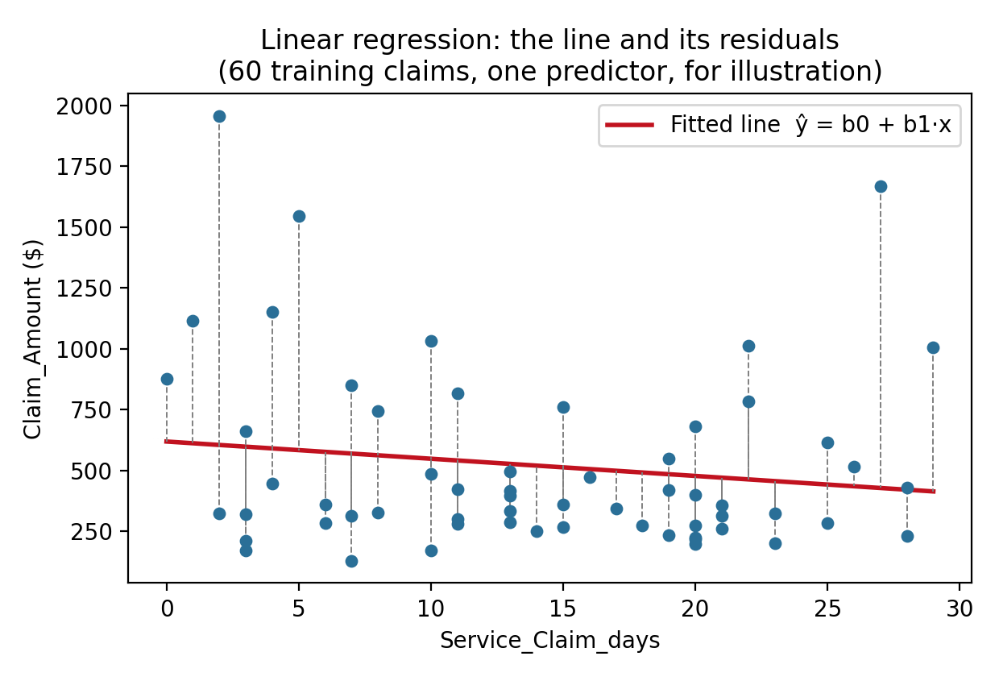
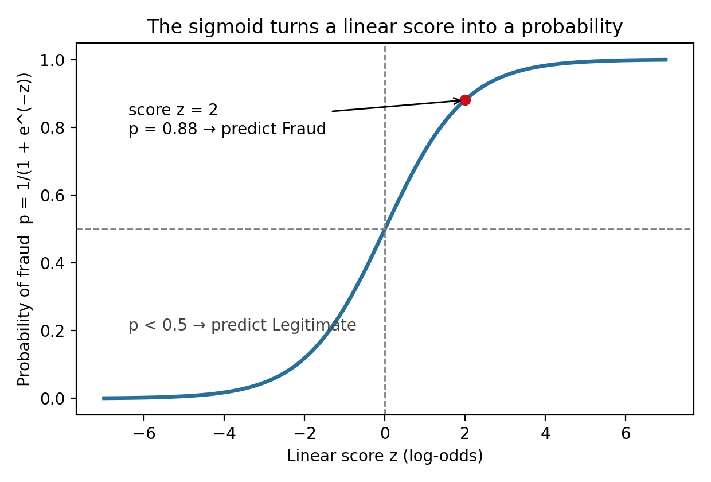
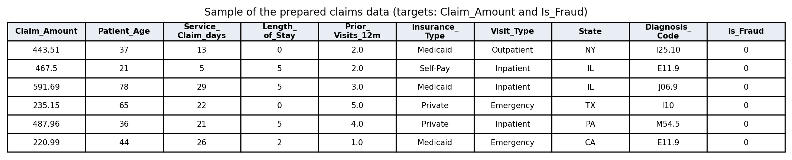
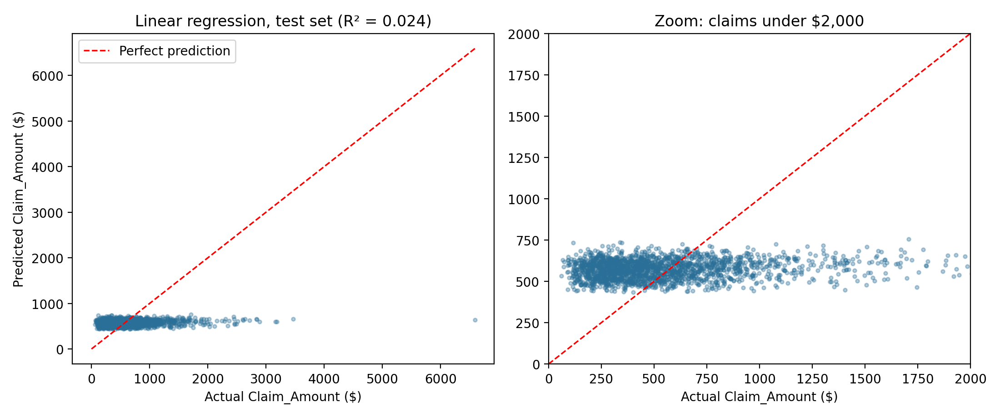
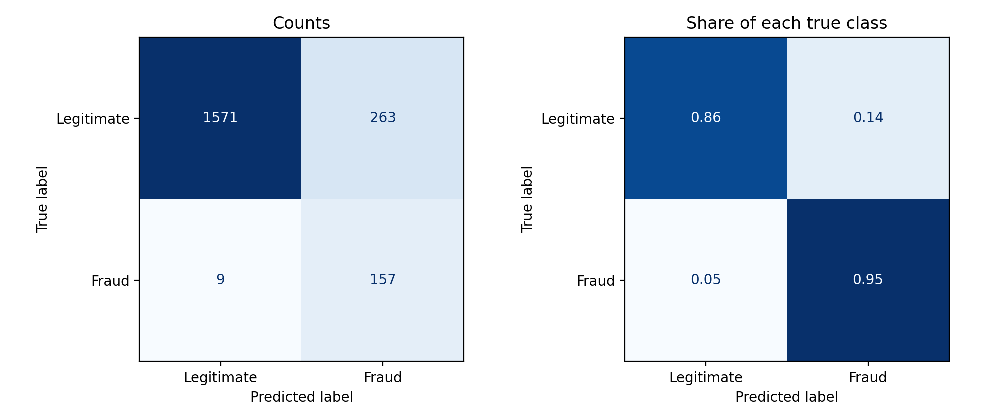

Regression
Regression
Overview
Regression models describe how a target variable changes as other variables change, and they are the usual yardstick that more complicated models have to beat. Two forms are used here. Linear regression predicts a number, such as the dollar amount of a claim. Logistic regression predicts a class, such as whether a claim is legitimate or fraudulent. Both start from the same ingredient, a weighted sum of the predictors, and differ in what they do with it.
Linear regression fits the equation ŷ = b0 + b1x1 + … + bpxp. The intercept b0 is the prediction when every predictor is zero, and each slope bj is the change in the prediction when xj rises by one unit with the other predictors held fixed. The coefficients are chosen by least squares, which minimizes the sum of squared residuals, where a residual is the gap between the actual value and the prediction. Squaring keeps positive and negative misses from canceling and penalizes large misses more heavily. The fit is judged with RMSE and MAE, which are average errors in the units of the target, and with R2, the share of the variation in the target that the model explains. An R2 of 0 means the model is no better than always predicting the average.

Service_Claim_days, so the idea can be seen in two dimensions. Each dashed segment is a residual. Least squares chooses the line that makes the total squared length of these gaps as small as possible. The actual model uses all 13 predictors at once.Logistic regression is built for a two-class label. If it used a straight line to predict a 0/1 outcome, the predictions could fall below 0 or above 1, which makes no sense as a probability. Instead it computes the same kind of linear score, z = b0 + b1x1 + … + bpxp, which is the log-odds of the class, and passes it through the sigmoid function p = 1 / (1 + e−z). The sigmoid squeezes any score into a probability between 0 and 1: a large positive score gives a probability near 1, a large negative score gives a probability near 0, and a score of 0 gives exactly 0.5. The probability becomes a class by applying a threshold, normally 0.5, so a claim is labeled fraud when p is at least 0.5. Because the score is linear, the boundary between the two classes is a straight line (or flat plane) in the predictor space.

The two models differ in what they predict, how they are fitted, and how their coefficients are read. Linear regression predicts a continuous amount, is fitted by minimizing squared error, and reports a coefficient as a change in the target. Logistic regression predicts a probability and a class, is fitted by maximizing the likelihood of the observed labels (equivalently, minimizing log-loss), and reports a coefficient as a change in the log-odds, which is easiest to read after exponentiating it into an odds ratio. In this project linear regression is used for claim severity, predicting Claim_Amount, and logistic regression is used for fraud, predicting Is_Fraud.
Data Prep
Supervised models learn from rows whose correct answers are already known, so each model needs a labeled target. The analysis uses the same health insurance claims dataset as the earlier tabs, with 10,000 claims and 23 variables. Two targets are used. For linear regression the target is the numeric column Claim_Amount (mean $572.80, ranging from $60.21 to $6,590.70). For logistic regression the target is the two-class label Is_Fraud (0 for a legitimate claim and 1 for a fraudulent claim), where 9,171 claims (91.71%) are legitimate and 829 (8.29%) are fraudulent.
Link to the labeled sample data (CSV): reg_prepared_data.csv

Claim_Amount is the target for linear regression and Is_Fraud is the target for logistic regression. Only a subset of columns is shown.The predictors are the same 14 variables used for the decision tree, with one change for the severity model. Claim_Amount is the target there, so it is removed from the predictors, leaving 13. The numeric predictors are Patient_Age, No_of_Claims_Provider, Service_Claim_days, Length_of_Stay, Prior_Visits_12m, and Chronic_Condition_Flag, and the categorical predictors are Insurance_Type, Patient_Gender, Provider_Specialty, Visit_Type, State, Diagnosis_Code, and Procedure_Code. Approved_Amount, Premiums, and Claim_Status were left out on purpose, because they are produced after or directly from the claim amount (Approved_Amount has a 0.94 correlation with Claim_Amount) and would give the model the answer it is supposed to predict.
Regression models need numbers, so each categorical variable was converted to 0/1 indicator columns with one-hot encoding. For linear regression one level of each category was dropped to serve as the reference level (for example Medicaid for Insurance_Type, and procedure 36415 for Procedure_Code), which gives 43 features and makes each remaining coefficient a difference from that reference. Logistic regression kept every level and gave 51 features. Logistic regression is also sensitive to the scale of its inputs, so the numeric columns were standardized (mean 0, standard deviation 1) using values learned from the training set alone.
Training and Testing Sets
The labeled data was divided into a training set, used to build each model, and a testing set, used once at the end to measure how well the model predicts claims it has never seen. The split was 80/20 with Scikit-learn's train_test_split and random_state=42, stratified on Is_Fraud so both sets have the same fraud rate. It is the identical split used for Naive Bayes and the decision tree, so the results on this tab can be compared directly with those models. The split was made before any encoding or scaling, so every learned value came from the training set only.
| Dataset | Observations | Legitimate | Fraudulent | Mean Claim_Amount |
|---|---|---|---|---|
| Training | 8,000 | 7,337 | 663 | $572.65 |
| Testing | 2,000 | 1,834 | 166 | $573.44 |


The two sets must be disjoint, meaning that no claim appears in both. If the model were tested on claims it had already seen, it could be scored on memory instead of on its ability to predict new claims, and the reported accuracy would be too optimistic. The code checks this directly by counting the rows shared by the two sets, and the count is 0.
Code
The models were fitted in Python with scikit-learn: LinearRegression for claim severity and LogisticRegression for fraud. The logistic model uses class_weight="balanced" so that the 8.3% fraud class is not ignored, matching the decision tree.
lin = LinearRegression().fit(Xtr_lin, ytr_lin) # target: Claim_Amount
logit = LogisticRegression(class_weight="balanced",
max_iter=5000, random_state=42)
logit.fit(Xtr_log, ytr_log) # target: Is_FraudResults
Linear Regression: Predicting Claim Severity
The linear regression was evaluated on the 2,000 test claims. To judge whether it learned anything, it is compared with a baseline that always predicts the training average claim of $572.65.
| Metric | Linear Regression | Baseline (always predict the mean) |
|---|---|---|
| RMSE | $425.95 | $431.18 |
| MAE | $288.89 | $292.47 |
| R² | 0.024 | 0.000 |

Service_Claim_days barely narrows down the claim amount.Two coefficients show how small the effects are. The coefficient for Service_Claim_days is −5.53, so each additional day between the service and the claim submission is associated with a claim about $5.53 lower, holding the other variables fixed. The coefficient for Chronic_Condition_Flag is −10.60, so a patient with a chronic condition is associated with a claim about $10.60 lower than a similar patient without one, which runs against the common expectation that chronic patients cost more. Both amounts are tiny compared with the $426 typical error, and the largest coefficient in the model (procedure 99214, +$44.05 compared with procedure 36415) is also small. Claim amount in this dataset is therefore not explained by patient, provider, or policy characteristics in a linear way.
As a check, the fraud label was added as an extra predictor. R² rose to 0.116 and the Is_Fraud coefficient was +$430.39, which matches the data: fraudulent claims average $990.93 and legitimate claims average $535.01. Fraud status is the only variable found to be strongly related to claim size, but it is known only after a claim is reviewed, so it cannot be used to price a claim in advance.
Logistic Regression: Predicting Fraud
| Metric | Value |
|---|---|
| Accuracy | 86.40% |
| ROC-AUC | 0.960 |
| PR-AUC (baseline 0.083) | 0.707 |
| Fraud Precision | 37.38% |
| Fraud Recall | 94.58% |
| Fraud F1-Score | 0.536 |
| Specificity (Legitimate Recall) | 85.66% |
| False Positives | 263 |
| False Negatives | 9 |
| Predicted Legitimate | Predicted Fraud | Total | |
|---|---|---|---|
| Actual Legitimate | 1,571 | 263 | 1,834 |
| Actual Fraud | 9 | 157 | 166 |

As with the decision tree, accuracy alone is misleading. A model that labeled every claim legitimate would be correct 91.70% of the time and would detect no fraud, so the 86.40% accuracy is lower than that baseline because the model deliberately trades accuracy for fraud detection. The more informative numbers are recall and precision. The model caught 157 of 166 fraudulent claims, and 37.38% of the 420 claims it flagged were truly fraudulent, about 4.5 times the 8.3% fraud rate in the test set.
Because the numeric predictors were standardized, a logistic coefficient is a change in the log-odds per one standard deviation, and it can be converted back to original units. For Service_Claim_days the coefficient is −5.69 per standard deviation (8.5 days), which means that each additional day between service and submission multiplies the odds of fraud by about 0.51, so the odds roughly halve with every extra day. For Claim_Amount the coefficient is +0.96 per standard deviation ($400), so each additional $100 on the claim multiplies the odds of fraud by about 1.27, an increase of 27%. Submitting quickly and claiming a larger amount both point toward fraud, which agrees with the decision tree.
Comparison with Naive Bayes and the Decision Tree
| Metric | Naive Bayes | Logistic Regression | Decision Tree |
|---|---|---|---|
| Accuracy | 85.1% | 86.4% | 87.4% |
| Fraud Recall | 98.2% | 94.6% | 94.0% |
| Fraud Precision | 35.6% |